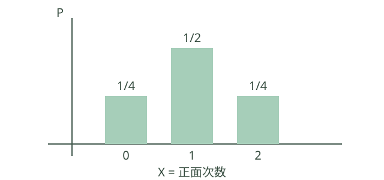

随机变量与分布
初学者先理解什么？
随机变量给每个试验结果分配一个数；分布说明这些数以什么概率出现。离散变量可列出各取值及概率；连续变量通常用密度描述区间概率。

公平硬币独立抛两次，正面次数 \(X\) 取 0、1、2 的概率分别是 1/4、1/2、1/4，总和为 1。不同的样本结果可以对应同一个随机变量值。
随机变量将结果映射为实数。分布函数：
\[ F_X(x)=P(X\leq x). \]
F 单调不减、右连续，x→−∞ 时趋于0、x→∞ 时趋于1。
- 当 a≤b 时，P(a<X≤b)=F(b)−F(a)。
- 离散型：概率质量函数 p(x)≥0，Σp(x)=1。
- 连续型（此处指绝对连续分布）：存在密度 f≥0，∫f=1，F(x)=∫[−∞到x]f(t)dt。
- 连续密度值可以>1；区间积分才是概率，P(X=x)=0。
- 并非所有分布都只有“纯离散”或“有密度连续”两种；也有混合分布等。
分布函数公式的核验。 当 \(a<b\)，事件 \(\{X\le b\}\) 是 \(\{X\le a\}\) 与 \(\{a<X\le b\}\) 的不交并，因此区间概率为 \(F(b)-F(a)\)。若 \(X\) 有密度，区间概率定义为密度积分，而单点集合的积分为零，所以 \(P(X=x)=0\)。分布函数单调性来自事件包含关系；右连续性来自概率对递减事件序列的连续性。
分布函数端点与右连续的证明。 对任意递减到 x 的实数列 \(x_n\downarrow x\)，事件 \(\{X\le x_n\}\) 递减到 \(\{X\le x\}\)，由概率递减连续性得 \(F(x_n)\to F(x)\)，这给出右连续。若 X 几乎处处取有限实数，则 \(\{X\le n\}\uparrow\Omega\)（至多差一个零概率事件），故 \(F(n)\to1\)；\(\{X\le-n\}\downarrow\varnothing\) 几乎处处，故 \(F(-n)\to0\)。单调性再把整数列极限扩展到连续自变量趋于正、负无穷的极限。若允许 X 以正概率取 \(\pm\infty\)，这两个端点结论需要相应修改。
随机变量、条件概率与常见分布
条件概率 \(P(A|B)=P(A\cap B)/P(B)\) 的分母是已经发生的条件事件 \(B\)，要求 \(P(B)>0\)。将样本空间限制到 \(B\) 后重新归一化，便得到该式。若有限或可数个 \(B_i\) 两两互斥且并成全集、各 \(P(B_i)>0\)，则全概率公式 \(P(A)=\sum_iP(A|B_i)P(B_i)\)；若另有 \(P(A)>0\)，贝叶斯公式反向更新原因概率 \(P(B_j|A)=P(A|B_j)P(B_j)/P(A)\)。医疗检测的阳性预测、质量缺陷追因可用此模型，但须使用真实基准率和检测准确率。
离散随机变量分布列列出取值与概率；若 \(\sum|x_i|p_i<\infty\)，均值 \(E(X)=\sum x_ip_i\)；若二阶矩有限，方差 \(D(X)=\sum(x_i-E(X))^2p_i\)。在独立同分布且均值有限的重复抽样中，样本平均依大数定律接近均值；方差衡量波动大小。若 \(X\sim B(n,p)\)，则 \(P(X=k)=C_n^kp^k(1-p)^{n-k}\)，\(E(X)=np\)，\(D(X)=np(1-p)\)；前提为固定次数、相互独立、每次成功概率相同。超几何分布用于有限总体不放回抽样，\(P(X=k)=C_M^kC_{N-M}^{n-k}/C_N^n\)。两种抽样模型的常见区别是不放回时后续成功概率通常改变。
正态分布 \(N(\mu,\sigma^2)\) 以均值定位、以标准差描述散布，数据常近似钟形但并非所有数据都正态。成对数据用散点图观察相关方向和强弱，样本相关系数刻画线性关联；相关不等于因果。线性回归 \(\hat y=a+bx\) 用最小二乘使残差平方和最小。分类变量用列联表，独立性检验比较观察频数与独立假设下期望频数；结论受样本量、抽样设计和检验近似条件约束。